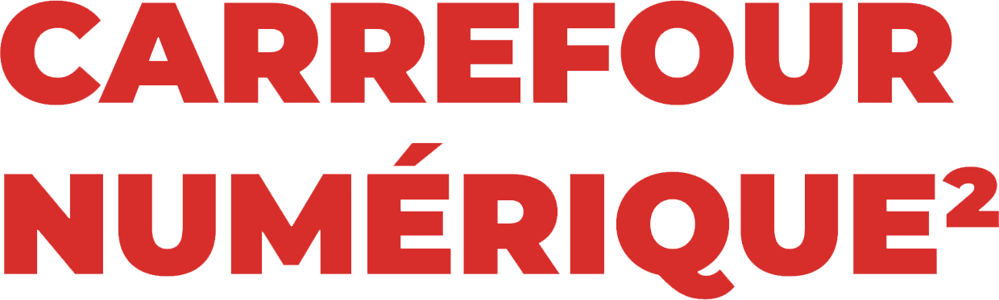

Paris, France
October 2, 2025
Sprints
Contribute to the PyData open-source ecosystem on the day following the conference
Sign up
At each PyData conference, we dedicate a day to Sprints - collaborative sessions focused on advancing open-source projects.
Join us for the PyData Paris sprint on October 2, 2025, from 9:30 AM to 5:00 PM.
Sign up for PyData sprints here.
Interested in leading a sprint? Submit your proposal here.
Sprint topics
Several topics are already confirmed!
A team will work on scikit-learn, skrub, skore, and other projets of the scikit-learn ecosystem.
Another team will focus on open-source GIS and geosciences, with topics such as QGIS, GDAL, JupyterGIS, and Pangeo.
In-browser scientific computing will also be worked on, with community members working on JupyterLite, Pyodide, Emscripten-forge.
A sprint on the array-api-extra package to help enhance support for alternative array types to NumPy across the PyData ecosystem.
A sprint where you will focus on creating custom components for Streamlit.
A sprint to connect with the scientific Python community in the Higher Education and Research by: (i) improving sharing of contents and methods via a common repository, (ii) build a common infrastructure based on the Jupyter and MyST ecosystem.
You can submit your sprint topic here.
Note: On the same day, the Carrefour Numérique will host the Apache Arrow 2025 Summit, which will gather the Apache Arrow Community. More information will soon be published.
Venue
The sprints will be held at Carrefour Numérique, within the Cité des Sciences et de l’Industrie.

FAQ
What will you do as an attendee?
There is a variety of ways to contribute during the sprints session including testing code, fixing bugs, adding new features, and improving documentation. You could also contribute to an entirely brand new project that our ecosystem is missing. One of the best parts about the sprints is that you might also have the opportunity to work with authors and core contributors of your favorite open source packages, as well as, the opportunity to work alongside other developers who are just as excited as you are to make the PyData community even better.
What are the benefits of attending a sprint?
Make open source better!
Code alongside package authors/contributors, while learning from them.
Become a power user of a core package by gaining a deeper understanding of its inner workings.
Improve your GitHub profile.
Can I participate?
Yes! Sprints are open to everyone no matter what your programming level of experience.
Sprints are a great way to add your contribution to your favorite Python libraries and packages. Sprints are free of charge for all participants.
Current registered projects for the sprint.
hazardous: Survival and competing risk analysis, as a scikit-learn compatible library.
in-browser computing: JupyterLite, Pyodide, emscrimpten-forge
open-source GIS discussion: QGIS, JupyterGIS, GDAL
scikit-learn: Machine Learning in Python
skore: Elevate ML Development with Built-in Recommended Practices
skrub: Prepping tables for machine learning
Don’t see your project or one that you think needs help?
Consider running your own sprint! Here is a checklist to evaluate if you would make a good sprint leader:
Your package is open source.
Your package is general enough to be useful to others in the PyData community.
Your package or package idea is mature enough to receive external contributions.
You have a strong enough grasp about your package to lead newcomers.
If you can answer "Yes" to all these questions, you shouldn’t hesitate to run your sprint via the following form.
On Friday morning, each sprint leader is given 2 to 3 minutes to pitch their package/idea to attendees in order to rally the troops.
How to “get ready”? You have never run a sprint before?
Don’t worry! We will provide guidance, and we will help to be successful.